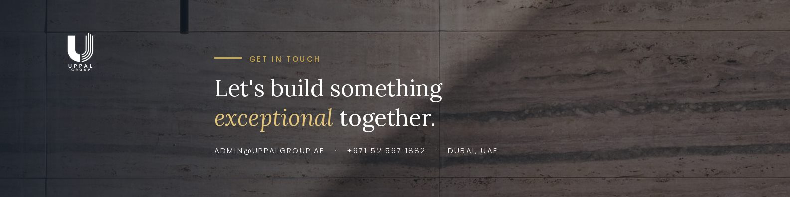

Offer, audience, proof, page structure
Available for selected freelance projects
I build digital experiences that move businesses forward.
I'm Jeruz Garde — a multidisciplinary developer, growth manager, and creative specialist building websites, systems, campaigns, and visual content that help brands perform better online.
Working as
Full-Stack Developer
01 Strategy → Build
02 Launch → Grow
01 / VALUE
Technical depth. Creative range. One accountable partner.
02 / ABOUT
The person behind the work
From idea to launch — without losing the business goal.
I am a Computer Engineer, instructor, developer, and digital growth specialist based in Southern Leyte. My work sits at the point where technical systems, design, content, and business strategy meet.
That range means I can help shape an idea, design the experience, build the system, prepare the content, deploy it, and support the next stage of growth. Clients do not have to coordinate a separate designer, developer, automation specialist, and content partner for every connected decision.
I also teach programming, networking, hardware systems, and information assurance. Teaching keeps my fundamentals sharp and my communication practical — useful when a project needs to be understood, handed over, and maintained.
03 / SERVICES
Built around real client problems
One studio for the system and the story around it.
Choose a focused engagement or combine development, automation, growth, and creative production into one connected scope.
04 / PROJECTS
Selected systems, sites, and brand work
Work designed to be used — not only admired.
Every case study explains the business challenge, the solution, and what was delivered. No placeholder links and no invented performance claims.
Use the arrows, swipe, or press the left and right arrow keys.
05 / GROWTH MANAGEMENT
A system for consistent visibility
Turn company-page activity into an organised growth workflow.
LinkedIn and social management are presented here through the work itself: positioning, content planning, visual systems, publishing routines, recruitment campaigns, and community engagement. Unverified analytics are never used as proof.
Company page operating system
Active workflow
Content pillars, calendar, campaign themes
Copy, graphics, hiring and lead content
Scheduling, daily posting, quality control
Community responses and relationship building
Review verified performance and refine

Brand direction / LinkedIn company-page assetSelected managed pages
Social profiles supported through content and page management.
Recent account snapshots supplied for this portfolio. Audience figures shown belong to the respective pages.
06 / CREATIVE WORK
Campaigns, content, and visual systems
Design that gives the message a stronger signal.
A growing gallery of brand applications, social graphics, event campaigns, promotional work, and content production.
07 / PROCESS
Clear from first call to what comes next
A professional process without unnecessary complexity.
The format adapts to the project, but the decisions stay visible and each stage has a clear purpose.
08 / CAPABILITIES
Tools selected for the work
A practical stack across product, operations, and content.
Technologies are grouped by where they create value — without arbitrary percentage scores.
09 / EXPERIENCE
Download CV ↓
Engineering, teaching, building, and growth
A multidisciplinary path with one consistent thread: making things work.
10 / START A PROJECT
Have a project, campaign, or idea?
Let's turn it into something that works.
Share what you are trying to improve, launch, or simplify. I will reply with the most useful next step — even if that means narrowing the scope first.
Meta Multi-Account Workspace
Account portfolio / Facebook and Instagram
Use the arrows, swipe, or press the left and right arrow keys.